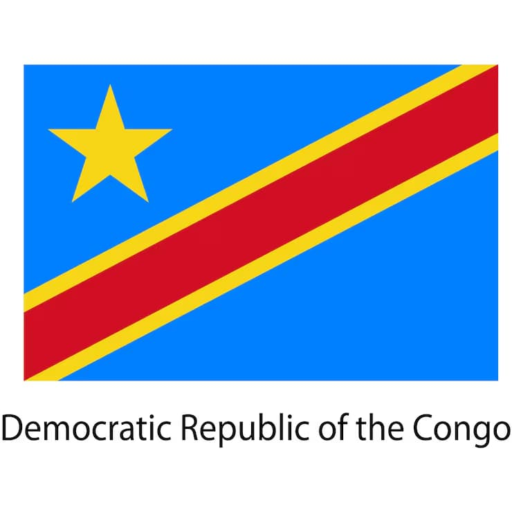

Alain Mukadi Kabeya
About Me
Hello! My name is Alain Kabeya Mukadi. I am a medical doctor from the Democratic Republic of Congo and I am a student in the WDD 131 - Dynamic Web Fundamentals course. I am passionate about web development and eager to learn new skills in this field. This website is a showcase of my work and progress throughout the course. Here, you will find various projects, assignments, and resources that I have created as part of my learning journey in Dynamic Web Fundamentals. Feel free to explore the different sections of the website and learn more about my skills and experiences in web development.
My Country

I am from the Democratic Republic of Congo, a country located in Central Africa. It is known for its vast rainforests and rich biodiversity, diverse cultures and the mighty Congo River, one of the longest rivers in the world. Congoleses are known for their hospitality and rich cultural heritage.